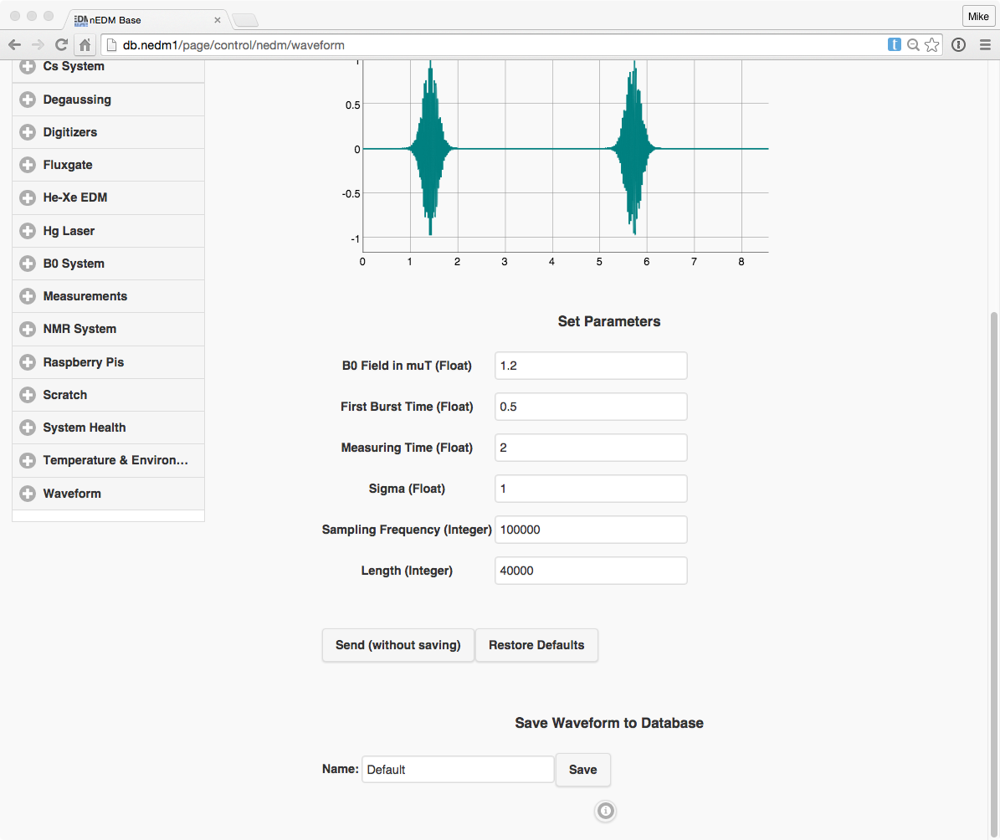

nEDM Interface
Tutorials
Modules
Classes
Externals
Special pages: Measurements and Raspberry Pis
"Special" pages
These pages are special subsystems in the nEDM Interface:
Measurements
http://db.nedm1/page/control/nedm/measurements
The measurements page provides an interface for:
- Viewing previously saved measurements
- Making new measurement "protocols" using commands from different subsystems
- Downloading files from measurements
- Editing/deleting previous measurements
There are two main controls, including a calendar and a single measurement interface.

The calendar shows where particular measurements have occured. Clicking on a
date will produce a list under the calendar. Clicking on an entry in this list
will load the measurement in the single measurement interface. Note that by
selecting Auto update, the measurements page will reload new measurements
when they are uploaded to the database.
The single measurement interface looks like:

One sees on this page several entries including:
- Name - name of measurement
- Saved - document
"id" - Protocol - interface for creating/editing a protocol, see the inline help on the measurements page for more information.
- Log - view/edit log and name of measurement
- All information - the full document saved in the database
- Attached files - files attached to this document
Interface to measurements with pynedm
On the measurements page it is only possible to singly delete measurements and download files one at a time. It is also currently not possible to upload files to the interface (this would be a valuable improvement of the interface).
However, all this functionality can be performed using
pynedm:
- Find many measurements:
- Post files to a document:
- Deleting a measurement or more measurements:
Raspberry Pis
http://db.nedm1/page/control/nedm/raspberries
The Raspberry Pi page provides an interface for editing/creating code that will be run on nEDM Raspberry Pis. (To setup a Raspberry Pi to run with this system, see the documentation here.)
The page looks like:

On this page, one has:
- a drop down select menu of the available Raspberry Pis (listed with their MAC ids)
- a status area showing when the last heartbeat from the device arrived
- a button to open a console
- list of the running code (green means script is running, red means it is not)
- log showing current logging information
Adding, editing code
A new script can be created by clicking on New script. One can edit this
script by opening the collapsible, which looks like:

In this view one sees the name of the script, and the code to be edited. There
is a drop-down menu where one can select the particular python module to be
edited. Removing a module can be done by clicking on Remove module.
(Note, there must always be a module named main with a function named
main inside.)
Adding a new module is done by:
- Typing the name into the text field.
- Clicking on
New module with name:
Selecting Export modules globally makes the modules in this script available
to other scripts on the same Raspberry Pi. This can be useful if a class is
used by many different scripts.
Save saves the script (and restarts all scripts on the particular Raspberry Pi).
Remove removes the scripts (and restarts all scripts on the particular Raspberry Pi).
Note that one needs write access to the raspberries database to do this, and that it is stronly recommended to give the user only write access to the Raspberry Pis s/he needs. See the documentation here:
Accessing the Raspberry Pi terminal
By clicking on Launch Terminal, one has access to an ssh-like session.
This can be useful for updating the software on the Raspberry Pis (remembering
that they all use a Netboot system, see
here and
here).

NMR Waveform generation
http://db.nedm1/page/control/nedm/waveform
This page gives an interface to the WebSocket daemon which controls the NMR generation. (This is currently running on the Mac mini: 192.168.1.113 and is decribed in more detail here.) Note, this interface and the corresponding WebSocket server daemon still need to be tested extensively before they are ready for production!
With this interface NMR waveforms can be generated and saved in the database. Selecting, viewing, and triggering waveforms can be performed:

In addition, waveforms may be generated and saved in the database. At the moment, only NMR pulses for He and Xe together are programmable.
